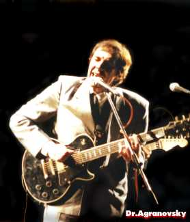
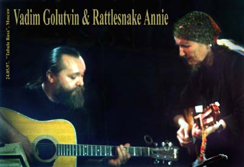
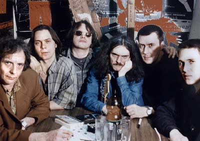

What are bands made of? Sometimes of haphazard people and stuff bound by a chain of coincidences. Sometimes they are assembled on purpose, but that’s another story. Dr. Agranovsky - man and group - grew out of the Moscow “kitchen blues”. This story started in 1972, when Agranovsky brothers (parents off on vacation) had their home open for part-time-job-most-time-rambling musicians and Moscow hippies, singing, smoking, playing, drinking, making direct takes on a mono tape recorder. The first listeners-friends, girls, and neighbours-got their kicks. The flat on the Lomonosov Prospect saw quite a few persons of underground fame: linguist, singer, and composer Alexander Lerman, who then played in Skomorokhi; Mike Guzhov, who himself rigged gadgets for electric guitar, and played peculiar blues on a XVIII century nine-string cittern; Vadim Golutvin, then one of the few if not the only in Moscow who had mastered acoustic guitar folk rock and country; Alexander Galkin; Pal Palych Stolypin, Boris Barkas, and many, many others. The elder brother, Alexey, sang the nights away in foreign language, and spent the mornings getting refunds for empty bottles to feed his brother and guests.Such kitchen blues happenings, this place or that, became part of a life style, to last for 25 years. In between, Alexey “Doctor” Agranovsky played solo, including three years in Ethiopia and two in Germany (where he had contracts on research and teaching; by the way, his stage nickname reflects his Ph.D and D.Sc. degrees). He says he saw the First Blues grooves in the Abyssinian mountain crests of Shewa, and the morning was metered out in the ritual drum beats from the Coptic church of the nearby town of Ambo (ancient name Hagere Hiwot, meaning Holy Water).Africa... green cloth draped over the knee of the hill... Icy deserts of Germany... And what’s blues if not experience? Got another definition? OK, be seated. So what if you have never learned solmization, the essence is what you’ve got to say.
Well, that was the background at which one could hear the rattle of that chain of coincidences. Doctor got a phone call from an old (though young and pretty) friend Veronica, with an invitation to come to the “Cry Baby” club and “play and sing something”. Doctor called his old-time session partner Alexander Chinenkov (a.k.a. Chinya), trumpet player and percussionist who worked with Arsenal, Voskresenie, and-for many years now-SV (to mention only the bands pertinent to the topic). At that time he was into blues harmonica, and promised his support rightaway. Then Doctor said it would be groovy to have on the bass their buddy Starukha Izergil (a.k.a. Alexei Antonov), a session musician in many Moscow projects. Chinya said he’d find out. Next day they three got together at Doctor’s and recorded a dozen things (from Bo Diddley’s “I Am a Man” to Lennon/McCartney’s “Come Together”). At the end of the session, Starukha said a neighbour of his, a young guitar player, could also be invited to the gig next day. That was how the first team assembled as water drops on a frying pan, and, on a rainy night of November 11, 1994, “Cry Baby” saw and heard Chinya (drums and harmonica), Starukha (bass guitar), Max Stepanov (first guitar), and Doctor (next guitar and vocals). In the middle of the show some people came and took away their drum (an important one), in the end two strings tore on the next guitar,taking away a piece of Doctor’s skin and blood stained his white shirt; yet nothing could take away the success. The bad luck was that on the way home Veronica broke her leg (she’s all right now).
From that time on, the team regularly appeared in Moscow clubs, and no one quit, on the contrary, new people came (all old friends, however). At the second appearance at the Magnifique, when “Nobody Knows the Way I Feel this Morning” was going on for twelve minutes already, to the stage came Vadim Golutvin (ex-Araks, ex-Voskresenie, then and now SV) and played one of his sparkling guitar soloes. And stayed, having found conciliation between his love for live blues and hate of the limelight, glory, and female smiles; anyway, he mostly played seated. Later on, the concerts invariably featured another musician from SV, Sergei Nefedov at keyboards, and up to its half-breakdown in the summer of 1997 the band appeared as “SV & Dr. Agranovsky”. The stage sound was set by the big-time wizard, Sound Director of the Lenkom Studio, the late Valerii Andreev and by Roman Ivanovskii; that was always an impeccable job.

In 1995 Doctor published in the Proceedings of the National Academy of Sciences of the USA (vol. 92, pp. 2410-2473) a paper describing a plant virus resembling (in the microscope) a rattlesnake. He mailed a reprint of this paper to Martin, Tennessee, to a country and blues singer Rattlesnake Annie, who had impressed him by her performance of the “Blue Flame Cafe” in the famous movie “The Other Side of Nashville”. They exchanged friendly letters until in May 1997 she flew in to Moscow and delivered several superb concerts backed by “SV & Dr. Agranovsky”. Just before returning home (hopefully not so smoke-filled as the Moscow clubs, which she kept complaining on) Rattlesnake Annie sang Gershvin’s “Summertime” in a jam on the Russian TV channel (featuring Golutvin on acoustic guitar, and Doctor on an electric Gibson unplugged by some bastard having stepped on the guitar cable).Both the merits and the flaws of “SV & Dr. Agranovsky” stemmed from that it was essentially a jam assembly of people constantly engaged in other projects. The raw blues performance did not cause indigestion but was even welcomed by the audience, as its other side was freedom. Unrehearsed, the team developed a solid drive, with riffs and ornaments stitched in by totally different lead guitars. “SV & Dr. Agranovsky” performed the blues classics, not copying versions but rather recalling the mood (with, for instance, “Bring It On Home” going back not to Led Zeppelin but to the Sonny Boy Williamson’s original) or deliberately rearranging the standards (Robert Johnson’s “Crossroads” and “Hellhound On My Trail”, Robert Cox’s “Nobody Knows...”); introduced the blues spirit into not-quite-blues things like “Come Together”, and composed some original items such as “Out of Work Boogie” and “Six-Bits-Blues” to Langstone Hughes’ lyrics, or “Slishkom Pozdno” (Too Late) in Russian. This, of course, wasn’t purely black music (this could have hardly been possible), but the vocals, phrasing and phasing were quite close to that (to quote Rattlesnake Annie, “Alex, you sing like black”).
This team has left no recordings. It appears that they confessed the ecological principles and kept the air tidy, making the music live and die in the hall. However, already breaking apart, they made a gig in the “Hour of the Owl” program of the STS-8 Moscow TV channel, featuring good blues (incidentally, the first live performance in the program) and an unrestrained interview.
The new band was composed by Starukha, Doctor, and Max, later joined by the drummer Yuri Titov (ex-SV). After six months of rehearsals at Starukha’s flat in Izmailovo, they resumed Moscow club performances with remakes of Beatles, Hendrix, and some previous blues stuff. The musical concept changed completely; or rather, a concept appeared where there had been none. In due course, Titov/Antonov/Stepanov made a quite special hard-rock trio, which got the name of Rokovye Yaitsa (translation to your choice: Fatal Eggs-after M.A.Bulgakov’s novel-or Rocking Balls of Doom). Doctor and a later acquisition, female singer Anya Salming performing Janis Joplin’s and Zeppelin’s things, were something of soloing electrons spinning around this hard nucleus. One of the audios on this page refers to just this period, it was recorded at the Boris Oppenheim’s studio in the summer of 1997: “Hellhound on My Trail”.

Having rolled for some time on hard-boiled Eggs (...), early in 1999 Doctor launched a blues project of his own, Chernyi Khleb (The Black Bread). The repertoire was based on blues and spirituals in original language, as well as own things in Russian. Their music comes from the roots; in nearly chamber style, they drive in their point without electric agressiveness. Generally speaking, the sound and the stage image of the band tend to the air of the old-time blues bars. This, however, did not avert them from large-stage performances, for instance, in the Moscow University. Two more audios on this page-“Stormy Monday Blues” and “Crossroads”-perhaps convey the taste of The Black Bread.Chernyi Khleb of ‘99: Dr. Agranovsky: vocals, acoustic guitar, electric guitar; Ilya Lushnikov: keyboards; Valerii Seregin: bass guitar; Kirill Yakovlev: drums; Sergei Kuznetsov: electric guitar, bass guitar; Dmitrii “Rake” Luzgin: harmonica, electric guitar.
The three years to follow brought enough changes. Andrey Lobanov, Nikolai Balakirev, and Igor Kartashev - in this order - have played drums with the band. Valery Seregin came back. Ilya Lushnikov left for Khabarovsk. New acquisitions were Eugenii Nemov, a young guitarist from Murmansk, and the experienced keyboardist Michail Olshanitsky. This merry-go-round spoiled the Doctor's temper, but hardened the band.
In 2001, the first CD record of Chernyi Khleb & Dr. Agranovsky, called "Tic", saw the light. It was recorded at the MMS studio, released by Otdelenie Vykhod, and came out round, in plastic case, with a gloomy booklet. It contained 12 songs recorded by 15 people of 14 to 50 years old. The following "Tic" session musicians deserve special notice: Eya Motskobilli, Lesha Birioukov, Boris Bulkin, Michail Vladimirov Jr., Yuri Kaverkin, Vova Kozhekin, Alexey Kolomeitsev, Alex Novoselov, and Sergey Ryzhenko.
Chernyi Khleb of 2005:
Original Russian text by Nikolai Shchepotiev
Adapted for English by Alexander Galkin
Photo by Evgenii Kulemin
News and details are available at the official web site of Dr. Agranovsky.
Contact E-mail: